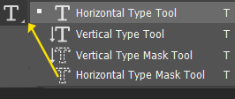

✨ تأثير النص الذهبي
دليل شامل لإنشاء تأثيرات النص الذهبي الاحترافية في Adobe Photoshop

تأثير النص الذهبي الاحترافي
✨ نص ذهبي لامع ✨
📋 التحضير والإعداد
1
إنشاء مستند جديد
أنشئ مستنداً جديداً بحجم مناسب للنص الذهبي. يُفضل استخدام خلفية داكنة لإظهار التأثير الذهبي بوضوح.
الاستخدام: File > New أو Ctrl+N
Ctrl+N
2
اختيار الخط المناسب
اختر خطاً عريضاً وواضحاً مثل Arial Black أو Impact أو أي خط عريض آخر. الخطوط العريضة تظهر التأثير الذهبي بشكل أفضل.
الاستخدام:Window ->Character
غير متاح
3
إعداد حجم النص
اضبط حجم النص ليكون كبيراً بما يكفي لإظهار التفاصيل الذهبية. يُفضل حجم 72pt أو أكبر.
الاستخدام: اضبط حجم الخط في Character Panel
غير متاح
✍️ إنشاء النص الأساسي
4

كتابة النص
استخدم أداة النص لكتابة الكلمة أو الجملة المراد تحويلها إلى نص ذهبي. تأكد من وضوح النص وقراءته.
الاستخدام: انقر على أداة النص واكتب النص المطلوب
T
5
تحديد موقع النص
ضع النص في وسط المستند أو في المكان المناسب. استخدم أدوات المحاذاة لتوسيط النص بدقة.
الاستخدام: استخدم أدوات المحاذاة في Options Bar
غير متاح
6
تحويل النص إلى شكل
انقر بزر الماوس الأيمن على طبقة النص واختر "Convert to Shape" لتحويل النص إلى شكل قابل للتعديل.
الاستخدام: انقر بزر الماوس الأيمن Rasterize Layer
انقر بزر الماوس الأيمن
🌈 إعداد التدرج الذهبي
7
إنشاء تدرج ذهبي
افتح Gradient Editor وأنشئ تدرجاً ذهبياً باستخدام الألوان: #FFD700 (ذهبي فاتح)، #FFA500 (برتقالي ذهبي)، #FF8C00 (ذهبي داكن).
الاستخدام: انقر على Gradient في Tools Panel
G
8
تطبيق التدرج
اسحب التدرج من أعلى النص إلى أسفله لإنشاء تأثير ذهبي طبيعي. يمكنك تجربة اتجاهات مختلفة للحصول على أفضل نتيجة.
الاستخدام: اسحب من أعلى إلى أسفل على النص
غير متاح
9
ضبط زاوية التدرج
اضبط زاوية التدرج لتحقيق أفضل تأثير ذهبي. الزاوية 90 درجة تعطي تأثيراً عمودياً جميلاً.
الاستخدام: اضبط الزاوية في Gradient Options
غير متاح
✨ إضافة أنماط الطبقة
10
إضافة الظل الداخلي
أضف Inner Shadow بلون ذهبي داكن (#B8860B) لإنشاء عمق داخل النص. اضبط المسافة والحجم للحصول على تأثير طبيعي.
الاستخدام: Blending Option > Inner Shadow
انقر بزر الماوس الأيمن
11
إضافة الظل الخارجي
أضف Drop Shadow بلون ذهبي داكن لإنشاء ظل طبيعي خلف النص. اضبط المسافة والانتشار للحصول على تأثير واقعي.
الاستخدام: Blending Option > Drop Shadow
انقر بزر الماوس الأيمن
12
إضافة التوهج الداخلي
أضف Inner Glow بلون ذهبي فاتح (#FFD700) لإنشاء تأثير توهج داخلي يجعل النص يبدو أكثر لمعاناً.
الاستخدام: Blending Option > Inner Glow
انقر بزر الماوس الأيمن
13
إضافة التوهج الخارجي
أضف Outer Glow بلون ذهبي فاتح لإنشاء هالة ذهبية حول النص. اضبط الحجم والشفافية للحصول على تأثير لطيف.
الاستخدام:Blending Option > Outer Glow
انقر بزر الماوس الأيمن
14
إضافة الحدود
أضف Stroke بلون ذهبي داكن لإنشاء حدود حول النص. هذا يعطي النص مظهراً أكثر تحديداً ووضوحاً.
الاستخدام:Blending Option > Stroke
انقر بزر الماوس الأيمن
15
إضافة الانعكاس
أضف Bevel & Emboss لإنشاء تأثير ثلاثي الأبعاد. اضبط العمق والحجم لتحقيق أفضل تأثير انعكاس ذهبي.
الاستخدام:Blending Option > Bevel & Emboss
انقر بزر الماوس الأيمن
🎭 إضافة التأثيرات المتقدمة
16
تطبيق مرشح الضوضاء
أضف مرشح Noise لإنشاء نسيج ذهبي طبيعي. استخدم Filter > Noise > Add Noise مع إعدادات منخفضة للحصول على نسيج دقيق.
الاستخدام: Filter > Noise > Add Noise
Filter > Noise
17
تطبيق مرشح التمويه
أضف تمويهاً خفيفاً باستخدام Gaussian Blur لتنعيم الحواف وجعل النص يبدو أكثر طبيعية وواقعية.
الاستخدام: Filter > Blur > Gaussian Blur
Filter > Blur
18
إضافة طبقة تدرج إضافية
أنشئ طبقة جديدة فوق النص وأضف تدرجاً ذهبياً إضافياً مع وضع المزج "Overlay" لتعزيز التأثير الذهبي.
الاستخدام: أنشئ طبقة جديدة وطبق تدرجاً
Ctrl+Shift+N
19
تطبيق مرشح التشويه
استخدم مرشح Liquify لتحسين شكل النص وإضافة تأثيرات طبيعية. يمكنك تعديل الحروف لتبدو أكثر أناقة.
الاستخدام: Filter > Liquify
Filter > Liquify
🎨 اللمسات الأخيرة
20
ضبط السطوع والتباين
استخدم Brightness/Contrast لضبط السطوع والتباين النهائي للنص الذهبي. هذا يساعد في تحقيق التوازن المثالي.
الاستخدام: Image > Adjustments > Brightness/Contrast
Image > Adjustments
21
ضبط التشبع
استخدم Hue/Saturation لضبط تشبع الألوان الذهبية. زيادة التشبع تجعل الذهب أكثر حيوية ووضوحاً.
الاستخدام: Image > Adjustments > Hue/Saturation
Ctrl+U
22
إضافة خلفية مناسبة
أضف خلفية داكنة أو متدرجة لإظهار النص الذهبي بوضوح. الخلفية الداكنة تجعل الذهب يلمع أكثر.
الاستخدام: أنشئ طبقة خلفية جديدة
غير متاح
23
حفظ المشروع
احفظ المشروع بصيغة PSD للحفاظ على جميع الطبقات والتأثيرات، ثم احفظ نسخة نهائية بصيغة JPG أو PNG.
الاستخدام: File > Save As
Ctrl+Shift+S
💡 نصائح احترافية
- استخدم ألوان ذهبية حقيقية للحصول على أفضل نتيجة
- جرب أوضاع مزج مختلفة مثل "Overlay" و "Soft Light"
- اضبط الشفافية للتأثيرات للحصول على مظهر طبيعي
- استخدم طبقات متعددة لبناء التأثير تدريجياً
- احفظ إعدادات Layer Style لاستخدامها في مشاريع أخرى
- جرب إضافة نسيج خفيف لتحقيق مظهر أكثر واقعية